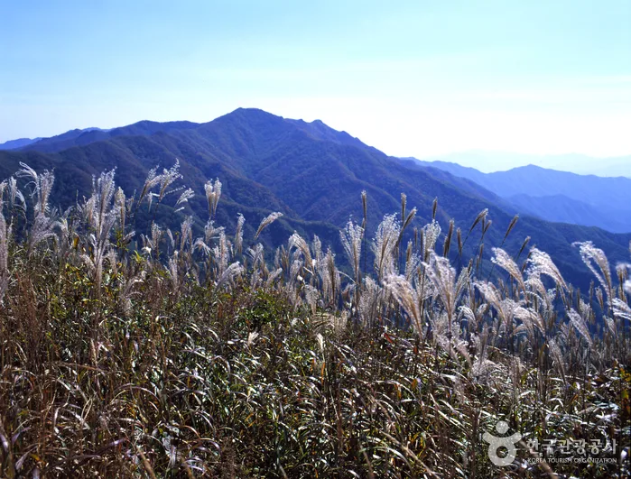
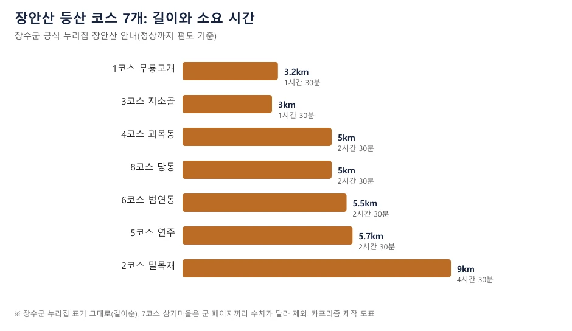
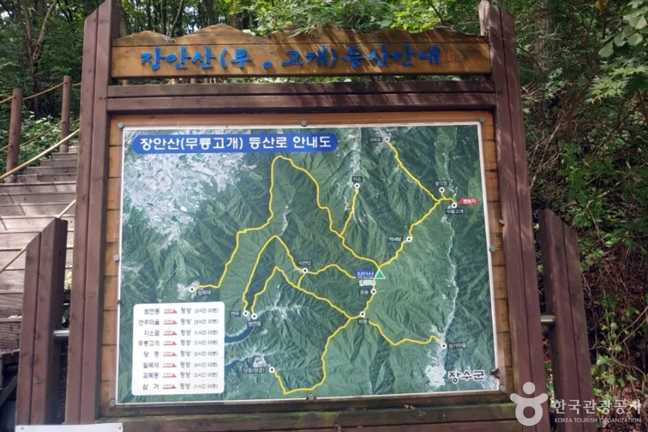
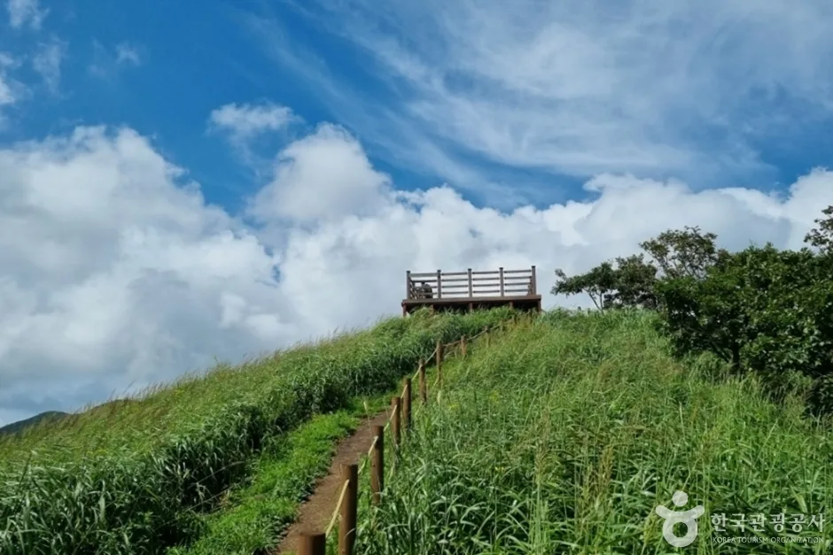
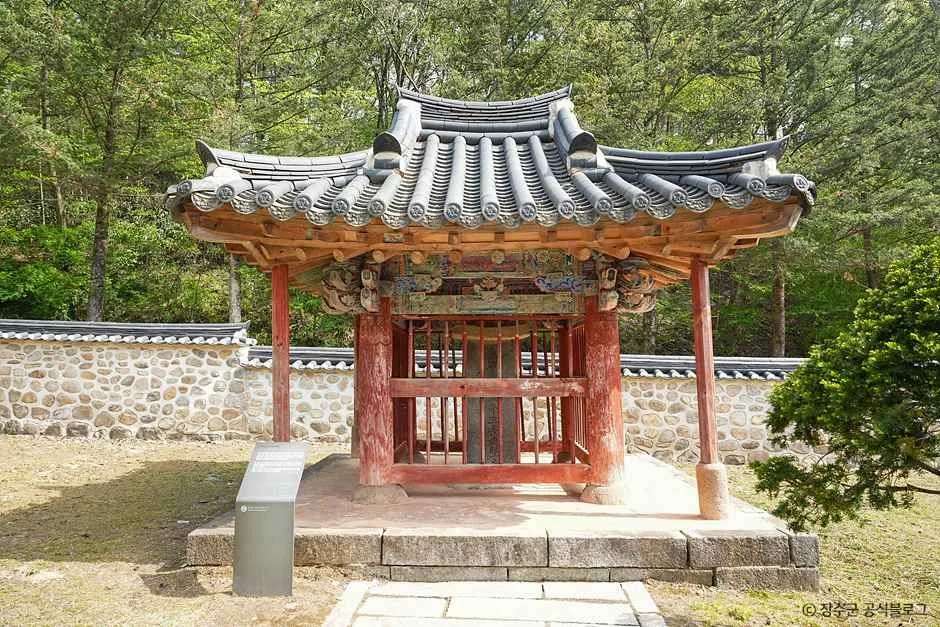
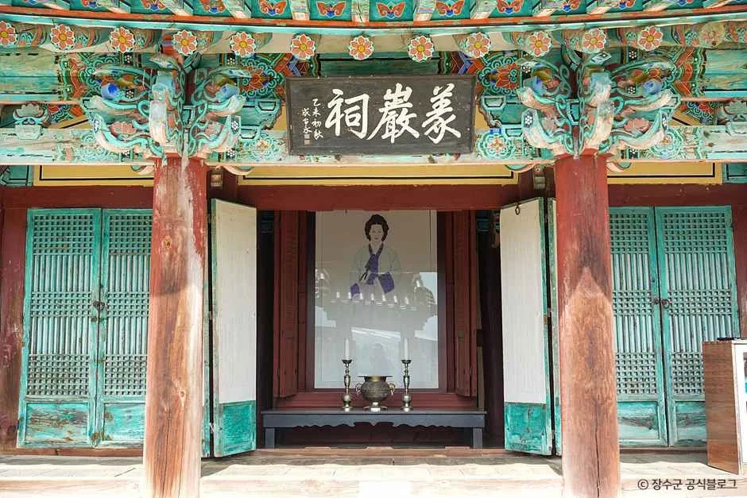
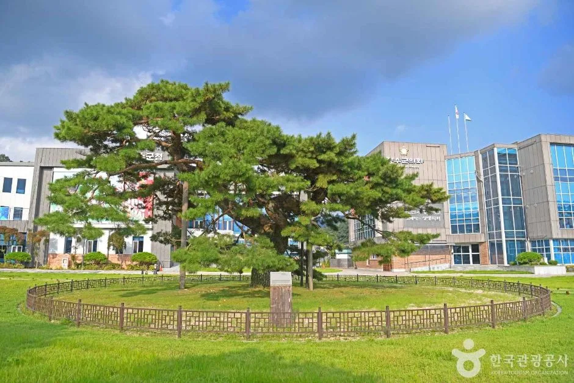
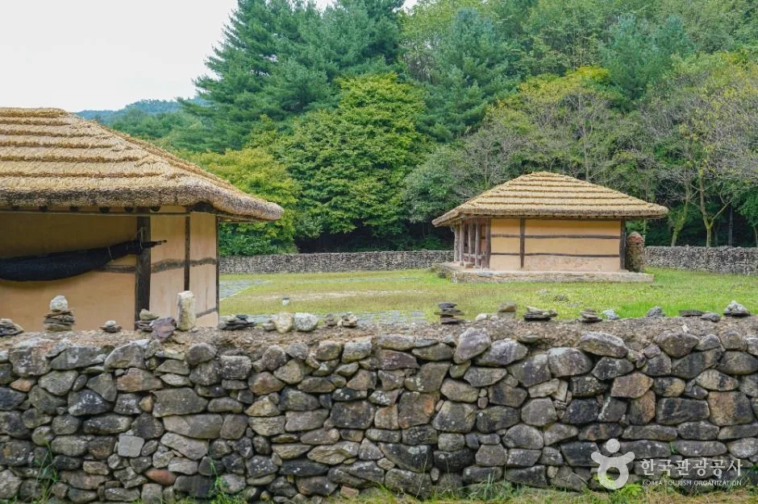
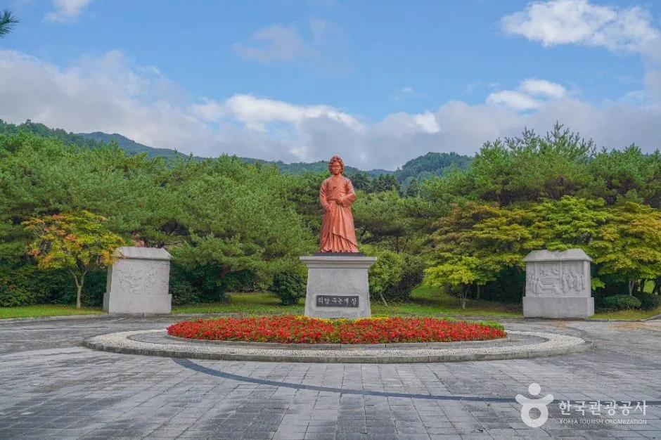
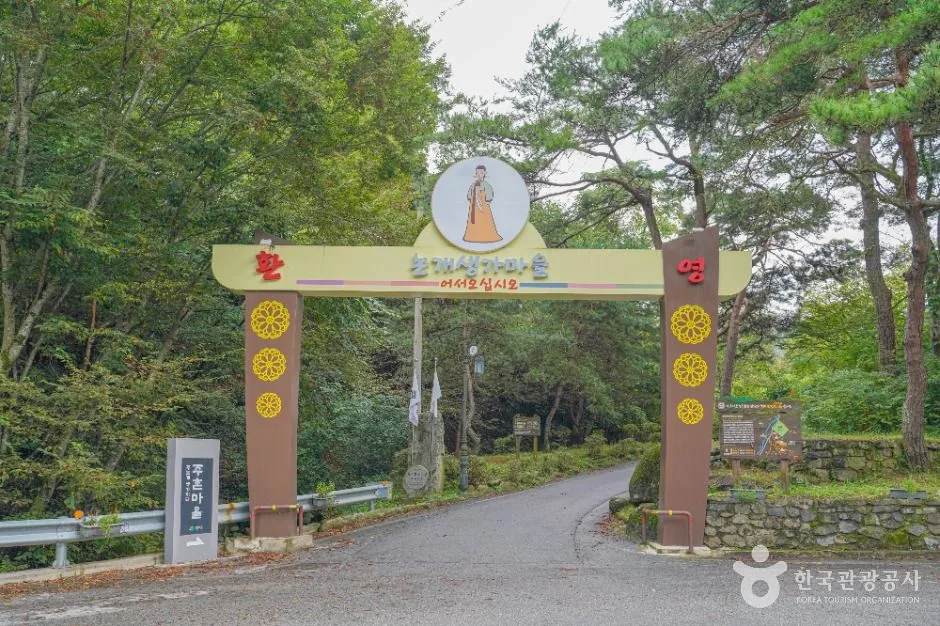

▲ 억새로 덮인 장안산 능선으로 소개된 사진. 촬영 시기는 확인하지 못했다. 사진=한국관광공사
"억새는 10월, 무룡고개에서 왕복 3시간." 전북 장수 장안산(1,237m)은 장수군 공식 안내에 억새 시기가 10월로 나와 있고, 해발 850m 무룡고개 들머리에서 오르면 왕복 약 3시간이라고 적혀 있다. 같은 장수에는 임진왜란 때 진주 남강에 몸을 던진 의암 주논개를 모신 논개사당과 그가 태어난 곳에 복원한 논개생가지가 있다. 이 글은 장수군 관광 누리집, 한국관광공사 TourAPI, 지역 언론 보도를 직접 열어 확인한 개방 시간·등산 코스·주차 정보만 쓰고, 확인하지 못한 항목은 그렇게 밝힌다. 이 사이트에서 장수는 처음 다룬다.
💡 먼저 확인한 것 세 가지
① 억새 날짜: 장수군 누리집은 "10월에는 무룡고개에서 입산하고 장안산 정상을 향해 올라가면 은색 억새꽃이 산을 덮는다"고만 적었다. 올해 절정 날짜를 알려 주는 공식 자료는 찾지 못해 날짜를 쓰지 않았다.
② 소요 시간이 페이지마다 다르다: 군 누리집에는 무룡고개~정상이 코스표에 1코스 3.2km·1시간 30분, 억새 안내에 왕복 약 3시간, 자연여행코스 일정표에 정상까지 2시간으로 각각 나온다(같은 편도 구간의 코스표 수치와 일정표 수치가 다르니 체력에 따라 여유를 두자). 7코스 삼거마을은 군 페이지끼리 4.5km·2시간 30분과 3.6km·3시간으로 달라 표와 도표에서 뺐다.
③ 입산통제: 군 관광 누리집에서 2026년 장안산 탐방로 통제 공지는 찾지 못했다. '없다'는 뜻이 아니므로 출발 전 산림과(063-350-2472)에 확인하자.
1. 한눈에 보기 — 명소별 개방·요금·주차
| 명소 | 개방·요금 | 주차 | 핵심 정보 |
|---|---|---|---|
| 장안산군립공원(1,237m) | 상시 개방, 연중무휴(TourAPI). 입장료 항목은 확인하지 못함 | 가능(TourAPI) | 1986년 8월 18일 군립공원 지정. 억새는 10월(군 누리집) |
| 무룡고개 들머리 | 상시 개방. 도로명 주소 장계면 의암로 19(군), TourAPI 주소는 번암면 지지리 | 있음(TourAPI) | 1코스 3.2km, 1시간 30분. 해발 850m에서 출발 |
| 논개사당(의암사·의암공원) | 00:00~24:00, 연중무휴(군). 입장료 항목은 확인하지 못함 | 가능(TourAPI) | 장수읍 논개사당길 41. 의암호 수변데크 |
| 논개생가지 | 09:00~18:00, 연중무휴(군). 입장료·주차 요금은 확인하지 못함 | 가능(TourAPI) | 장계면 의암로 558. 2만여 평, 2000년 복원 |
| 방화동자연휴양림·가족휴가촌 | 휴양림 09:00~18:00(TourAPI), 입장료 무료(군) | 가능(TourAPI) | 번암면 방화동로 778. 문의 063-350-2475 |
직선거리는 한국관광공사 좌표를 단순 계산한 값이다. 논개사당~논개생가 약 9.7km, 논개생가~무룡고개 약 4.0km, 논개사당~무룡고개 약 8.3km, 논개사당~방화동휴양림 약 6.0km이며, 자동차 도로 거리와 소요 시간은 공식 자료에서 확인하지 못했다. 생가지와 무룡고개의 도로명 주소가 모두 '의암로'인 점은 군 누리집에 적힌 그대로이고, 두 곳이 같은 도로 위에서 이어지는지는 확인하지 못했다. 장수군 장안산 안내 바로가기
▲ 억새로 덮인 장안산 능선으로 소개된 사진. 촬영 시기는 확인하지 못했다. 사진=한국관광공사
2. 장안산 — 1,237m, 군립공원, 8개 들머리
장수군 누리집은 장안산을 장수·장계·계남·번암 4개 면에 걸친 산(약 1,237m)으로 소개하며 1986년 8월 18일 군립공원으로 지정됐다고 적는다. 국립공원이 아니라 군이 관리하는 군립공원이고, 탐방 안내 문의는 군 산림과다. 군 누리집이 안내하는 등산로 입구는 무룡고개(장계면 의암로 19), 괴목동(계남면 장안산로 553-41), 지소(계남면 지소골길 194), 밀목재(장수읍 동촌리 산 52-1), 범연동(장수읍 덕산리 55), 연주(장수읍 덕산로 763-3), 삼거마을(번암면 지지리), 당동(장수읍 덕산리 385)이다. 자차 독자는 입구마다 주차장 규모와 요금이 공식 자료에 없어, 무룡고개(TourAPI 주차 '있음') 외에는 확인하지 못했다.

▲ 억새와 능선을 담은 장안산 소개 사진. 촬영 시기는 확인하지 못했다. 사진=한국관광공사

▲ 장수군 누리집의 장안산 코스별 길이와 소요 시간. 삼거마을 코스는 군 페이지끼리 수치가 달라 뺐다. 카프리즘 제작 도표
| 코스 | 출발지 | 길이 | 소요 시간 |
|---|---|---|---|
| 1코스 | 무룡고개 | 3.2km | 1시간 30분 |
| 3코스 | 지소골 | 3km | 1시간 30분 |
| 4코스 | 괴목동 | 5km | 2시간 30분 |
| 8코스 | 당동 | 5km | 2시간 30분 |
| 6코스 | 범연동 | 5.5km | 2시간 30분 |
| 5코스 | 연주 | 5.7km | 2시간 30분 |
| 2코스 | 밀목재 | 9km | 4시간 30분 |
군 누리집이 '장안산 억새꽃' 항목에서 권하는 것은 무룡고개 입산이다. 장안산은 해발 1,237m지만 들머리 무룡고개가 850m라서 왕복 3시간 정도로 오르내릴 수 있다고 안내한다. 한국관광공사 정보는 무룡고개에서 장안산 정상으로 향하는 능선에 가을엔 억새가 장관이고 겨울엔 눈꽃 산행 코스로 인기가 높다고 소개한다. 정상 일대의 억새 면적이나 올해 절정 시기는 확인하지 못했다. 이 산의 억새밭은 복원 대상이기도 하다. 2025년 5월 보도에 따르면 장수군 장안산 억새숲이 산림청 '2026년 대규모 산림복원사업'에 선정돼 2026년부터 3년간 국비를 포함한 총사업비 20억 원으로 억새 20만 본을 심고 생태탐방로와 목재전망대를 만들 계획이다. 공사 일정이나 탐방 제한이 있는지는 확인하지 못했다.

▲ 무룡고개 쪽 등산로 안내판으로 소개된 사진. 판의 세부 글자는 읽지 못했다. 사진=한국관광공사

▲ 무룡고개 일대 능선 위의 시설. 어떤 시설인지 이름은 확인하지 못했다. 사진=한국관광공사
3. 논개사당(의암사) — 24시간 열려 있는 의암공원
장수군 누리집에 따르면 논개사당은 장수읍 논개사당길 41의 의암공원 안에 있고 입장시간 00:00~24:00, 연중무휴다. 장수 태생의 주논개가 진주 촉석루 아래 남강의 바위에서 왜장을 껴안고 순국한 것을 기려, 1846년 '촉석의기논개생장향수명비'를 장수현감이 세웠고 1955년 군민들이 장수군 남산에 사당을 지었으며 1974년 현 위치(의암사)로 옮겼다고 한다. TourAPI에는 경내에 생장향수명비각, 기념관, 외삼문, 내삼문, 충의문, 영정각이 차례로 있다고 나온다. 사당 바로 앞 두산저수지는 현재 의암호로 불리고 호수 주변 숲과 수변데크가 산책로라고 군 누리집은 설명한다. 문의는 의암공원 관리처 063-350-2344, 해설은 063-350-2358이다. 논개사당 안내 바로가기

▲ 논개사당 경내의 전통 건물. 어떤 건물인지 이름은 확인하지 못했고, 원본 이미지에 '장수군 공식블로그' 표기가 있다. 사진=한국관광공사

▲ 논개사당 영정각으로 소개된 사진. 촬영 시기는 확인하지 못했고, 원본 이미지에 '장수군 공식블로그' 표기가 있다. 사진=한국관광공사
사당에서 가까운 장수군청 앞마당에는 의암송이 있다. 한국관광공사 정보로는 나이가 약 400년으로 추정되고 높이 9m, 가슴높이 둘레 3.22m의 소나무인데, 이름은 논개가 심었다고 해서 붙었다고 하나 확실한 것은 아니라고 소개한다. 사당에서 직선 약 0.4km이고 상시 개방, 주차 가능으로 올라 있다. 장수누리파크(논개사당길 65)는 TourAPI에 캠핑장(입실 14:00·퇴실 12:00), 홍보관(10:00~17:00), 누리놀이터(화~일 09:30~17:30)로 안내되어 있고 요금은 확인하지 못했다. 의암주논개제전은 군 누리집에 '매년 음력 9월 3일'로 적혀 있고(한국관광공사 정보에는 이날이 논개 탄생일이자 장수군민의 날이라고 나온다), 한국천문연구원 월력요항 기준 2026년 음력 9월 1일이 양력 10월 11일이어서 양력 10월 13일(화)에 해당한다. 제전은 제례봉행, 의암주논개상 추대식, 논개 시낭송 전국대회, 논개선양 심포지엄으로 소개되며 장소는 의암공원 일원이다. 다만 2026년 행사 일정 공지는 확인하지 못했다. 같은 의암공원에서 열리는 제20회 장수한우랑사과랑축제는 9월 10~13일에 이미 끝났다(머니투데이방송 보도).

▲ 장수군청 앞 의암송으로 소개된 사진. 촬영 시기는 확인하지 못했다. 사진=한국관광공사
4. 논개생가지 — 09:00~18:00, 2만여 평 복원지
논개생가지는 장계면 의암로 558에 있고 개관시간 09:00~18:00, 연중무휴다. 군 누리집과 TourAPI는 논개가 1574년(선조 7년) 장계면 대곡리 주촌마을에서 서당 훈장 주달문과 밀양 박씨 사이에서 태어났다고 소개한다. 원래 생가는 대곡제 저수지 건설로 수몰됐고, 2000년에 2만여 평 부지로 복원했다. 의랑루, 단아정, 연못, 논개 동상, 논개 부모묘, 기념비, 시비, 논개생장지사적불망비, 최경회현감선덕추모비, 초가집 생가가 있다. 인근에 논개생가체험마을과 2016년 준공된 한옥숙박단지, 힐링산책로, 도깨비전시관이 있는 대곡제관광지가 있다는 안내도 군 누리집에 있다. 입장료와 주차 요금은 군·TourAPI 어디에도 적혀 있지 않았다. 문의는 논개생가 관리사무소 063-350-1662, 해설 063-350-2358이다. 논개생가지 안내 바로가기

▲ 논개생가지의 초가와 돌담. 촬영 시기는 확인하지 못했다. 사진=한국관광공사

▲ 논개생가지 일대의 동상으로 소개된 사진. 촬영 시기는 확인하지 못했다. 사진=한국관광공사

▲ 논개생가마을 입구로 소개된 사진. 촬영 시기는 확인하지 못했다. 사진=한국관광공사
논개 관련 최근 소식으로는 2026년 8월 19일 논개 생가지에서 제433주기 의암 주논개 추모제가 열렸다는 보도가 있다. 보도에 따르면 군은 매년 음력 7월 7일 순국일을 맞아 추모제를 여는데, 2026년 8월 19일이 음력 7월 7일에 해당한다. 주기는 순국 연도 1593년에서 2026년까지 433년으로 보도와 일치한다. 이 행사는 이미 끝났다.
5. 하루 동선과 식사 — 개방 시간으로 순서 짜기
공식 정보로 순서를 정할 수 있는 근거는 개방 시간뿐이다. 생가지는 18:00에 닫고 사당·의암공원은 24시간 열려 있으므로, 억새 산행을 오전에 하고 생가지를 오후 이른 시간에, 사당·의암호 산책을 마지막에 넣는 순서가 안전하다. 일몰 시각과 주차장 혼잡은 확인하지 못했다. 도로 거리와 소요 시간이 공식 자료에 없어 이동 시간은 적지 않았다.
| 순서 | 장소 | 공식 정보로 확인된 것 |
|---|---|---|
| 1 | 무룡고개 → 장안산(1코스) | 편도 3.2km·1시간 30분, 왕복 약 3시간, 상시 개방, 주차 있음 |
| 2 | 논개생가지 | 09:00~18:00, 연중무휴, 입장료·주차 요금 확인 못함 |
| 3 | 논개사당·의암호 | 24시간 개방, 연중무휴, 의암송은 군청 앞 |
| 선택 | 방화동휴양림·가족휴가촌 | 입장료 무료(군), 휴양림 09:00~18:00(TourAPI) |
식사는 TourAPI에 등록된 곳만 적는다. 삼봉가든(장수읍 장수로 1858-3)은 흑염소전골과 오리한방백숙이 대표 메뉴이고 11:00~21:00(마지막 주문 20:30), 매월 첫째 일요일 휴무, 주차 가능, 전화 063-351-8440으로 올라 있다. 논개사당에서 직선 약 2.8km이며 영업 정보는 등록 시점 기준이다. 군 관광 누리집에 '장수한우 전문식당' 메뉴가 있으나 개별 식당 정보는 확인하지 못했다.
6. 계절 주의사항과 이어 가기
확인한 공식 정보에서 계절과 관련된 것은 억새 시기(10월)와 겨울 눈꽃 산행(TourAPI)뿐이고, 산불조심기간 입산통제나 겨울철 도로 통제는 확인하지 못했다. 이 일대 단풍 시기도 공식 날짜를 확인하지 못해 적지 않았다. 전국 단위 단풍 예측은 산림청 공식 단풍 지도 기사와 단풍 절정 예측 가이드를 참고하자. 인접 시군 기사와 억새 기사는 아래와 같이 구분된다.
| 기사 | 다른 점 |
|---|---|
| 남원 광한루원·뱀사골·정령치 | 장수와 맞닿은 남원의 가을 하루 코스 |
| 무주 적상산 가을 드라이브 | 무주 적상산 1,034m, 차로 오르는 코스 |
| 무주 덕유산 곤돌라·향적봉 | 덕유산 곤돌라 예약과 정상 안내 |
| 진안 마이산 돌탑 | 진안 마이산 돌탑 80개 기사 |
| 진안 용담호 드라이브 | 호수를 따라 도는 64.6km 도로 기사 |
| 함양 상림·거창 수승대 | 경남 함양 쪽 나들이 기사 |
| 순창 강천산 단풍 | 전북 군립공원 단풍 기사 |
| 서울 하늘공원 억새축제 | 도심 억새밭 축제 기사 |
| 제주 따라비오름 억새 | 오름에서 보는 억새 기사 |
✅ 출발 전 체크리스트
· 장안산: 군립공원, 억새 10월(군 누리집), 무룡고개 들머리 1코스 3.2km·1시간 30분, 왕복 약 3시간
· 입산통제·올해 절정 날짜는 확인 못 함 → 산림과 063-350-2472(TourAPI에는 063-350-2445)
· 논개사당·의암공원 00:00~24:00, 논개생가지 09:00~18:00, 모두 연중무휴
· 생가지 입장료·주차 요금, 입구별 주차장 규모는 확인 못 함
· 의암주논개제전 음력 9월 3일(2026년 일정 공지는 확인 못 함)
· 문의: 생가 관리사무소 063-350-1662, 의암공원 063-350-2344
7. 정리
장안산(1,237m)은 장수군립공원이고, 군 누리집은 억새 시기를 10월로 안내하며 해발 850m 무룡고개에서 1코스 3.2km·1시간 30분, 왕복 약 3시간으로 다녀올 수 있다고 적는다. 논개사당·의암공원은 24시간, 논개생가지는 09:00~18:00 연중무휴다.
올해 억새 절정 날짜, 2026년 입산통제 여부, 논개생가지 입장료·주차 요금, 자동차 도로 거리·소요 시간은 공식 자료로 확인하지 못했으니 출발 전 장수군 산림과와 생가 관리사무소에 문의하자.